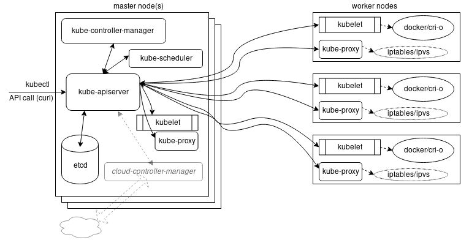

Architecture
Kubernetes Architecture and What It Means for Security
At a very high level, Kubernetes has the following main components
- A Control plane, running on one or more master nodes
- One or more worker nodes

Control Plane Components (Master nodes)
API server
Exposes the Kubernetes API. All communications between all components go through the API server. The main implementation of a Kubernetes API server is kube-apiserver.
Scheduler
The role of the kube-scheduler is to assign new objects, such as pods, to nodes. It implements a super complex logic for ranking the nodes!
→ It uses priorities (ranking) and predicates (exclusion management).
etcd (cluster store)
It's the single source of truth for the cluster.
etcd is a distributed key-value data store used to persist a Kubernetes cluster's state.
In Kubernetes, besides storing the cluster state, etcd is also used to store configuration details such as subnets, ConfigMaps, Secrets, etc.
Etcd can be hosted on the master node (stacked) or on its dedicated host (external).
Controller manager
Controllers are watch-loops continuously running and comparing the cluster's desired state (provided by objects' configuration data) with its current state (obtained from etcd data store via the API server).
The controller manager is a controller of controllers.
A cloud-controller-manager is a controller dedicated to a single cloud provider.
Node components (Worker Node / formerly minion)
A worker node provides a running environment for client applications.
A Pod is the smallest scheduling unit in Kubernetes. It is a logical collection of one or more containers scheduled together.
kubelet
The kubelet is an agent running on each node and communicates with the control plane components from the master node. It receives Pod definitions, primarily from the API server, and interacts with the container runtime on the node to run containers associated with the Pod. It also monitors the health of the Pod's running containers.
The kubelet connects to the container runtime using Container Runtime Interface (CRI).
We have the following flow : [Master node] → [Kubelet → CRI shims → container runtime]
kube-proxy
The kube-proxy is the network agent which runs on each node responsible for dynamic updates and maintenance of all networking rules on the node.
It abstracts the details of Pods networking and forwards connection requests to Pods.
It maintains local IPVS (formerly IPTABLES) rules.
Container runtimes implementing the CRI
- Docker
- containerd (used by Docker)
- CRI-O
- rkt (eol)
- gVisor provides a better isolation between containers (blog post)
- ...
For more info, see this very good presentation
Addons for DNS, Dashboard, cluster-level monitoring and logging.
Addons are cluster features and functionality not yet available in Kubernetes, therefore implemented through 3rd-party pods and services.
- DNS - cluster DNS is a DNS server required to assign DNS records to Kubernetes objects and resources
- Dashboard - a general purposed web-based user interface for cluster management
- Monitoring - collects cluster-level container metrics and saves them to a central data store
- Logging - collects cluster-level container logs and saves them to a central log store for analysis.
Networking
Inside a Pod
The Kubernetes network model aims to reduce complexity, and it treats Pods as VMs on a network, where each VM receives an IP address - thus each Pod receiving an IP address. This model is called "IP-per-Pod" and ensures Pod-to-Pod communication, just as VMs are able to communicate with each other.
When a Pod is started, a network namespace is created inside the Pod, and all containers running inside the Pod will share that network namespace so that they can talk to each other via localhost.
Between Pods
Inside a node, sing a Container Network Interface (CNI) to reduce complexity and allow cloud-vendor specific implementations.
Between nodes, using the cloud provider interface. Or using a software such as Weave, Calico, Romana.
Pod-to-External World Communication
Using services, to send trafic to a Pod using its kube-proxy.
Attachments
{kind=link}